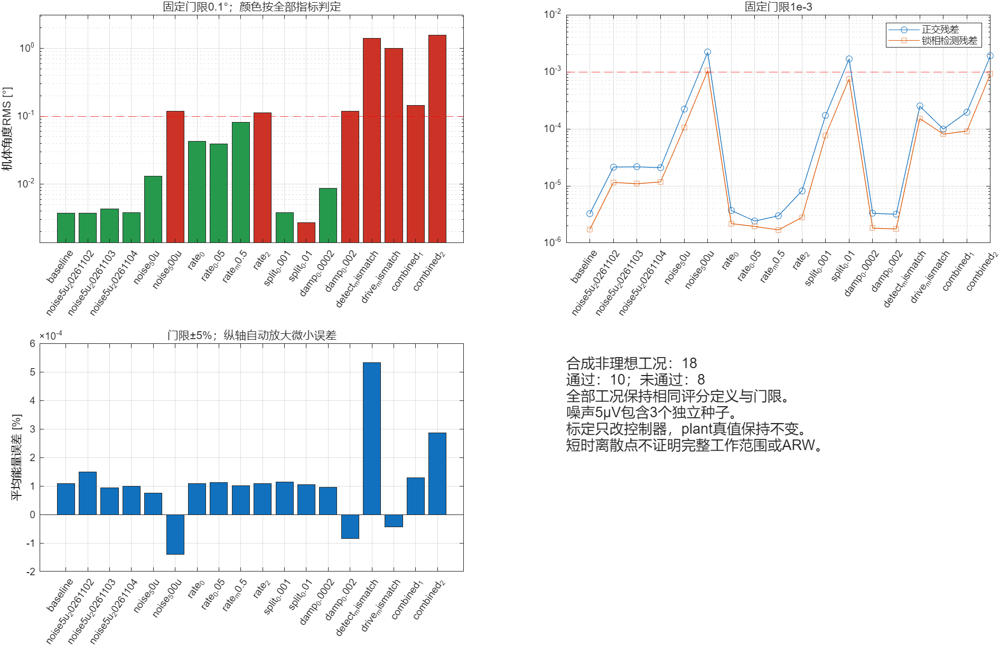

固定门限，源中心评分，后40%有效帧；合成参数，不代表硬件认证。点击工况查看相同面板及中文报告。

| 工况 | 结果 | 角度RMS[°] | 正交RMS | 锁相残差RMS | 未满足项 |
|---|---|---|---|---|---|
| 基线 | 通过 | 0.00375707 | 3.2602e-06 | 1.7242e-06 | |
| 5μV噪声独立种子 | 通过 | 0.003724286 | 2.1408e-05 | 1.1537e-05 | |
| 5μV噪声独立种子 | 通过 | 0.004329689 | 2.1613e-05 | 1.0912e-05 | |
| 5μV噪声独立种子 | 通过 | 0.003802605 | 2.0892e-05 | 1.1786e-05 | |
| 50μV噪声 | 通过 | 0.01297871 | 0.00022037 | 0.00010482 | |
| 500μV噪声 | 未通过 | 0.1181853 | 0.0022067 | 0.0010483 | quadrature,PLL_detector,body_angle |
| 0rad/s输入 | 通过 | 0.04276455 | 3.7072e-06 | 2.1851e-06 | |
| 0.05rad/s输入 | 通过 | 0.03894347 | 2.4239e-06 | 1.9474e-06 | |
| -0.5rad/s输入 | 通过 | 0.08170103 | 2.9918e-06 | 1.6962e-06 | |
| 2rad/s输入 | 未通过 | 0.1130849 | 8.2098e-06 | 2.7973e-06 | body_angle |
| 0.001Hz频裂 | 通过 | 0.003791957 | 0.00017089 | 7.6215e-05 | |
| 0.01Hz频裂 | 未通过 | 0.002712465 | 0.0016911 | 0.00075398 | quadrature |
| 0.0002/s阻尼半差 | 通过 | 0.008595645 | 3.3073e-06 | 1.8196e-06 | |
| 0.002/s阻尼半差 | 未通过 | 0.1197775 | 3.182e-06 | 1.7597e-06 | body_angle |
| 检测标定±1%/±0.5°失配 | 未通过 | 1.413948 | 0.00025033 | 0.00015177 | body_angle |
| 驱动标定±1%/±0.5°失配 | 未通过 | 0.9948379 | 9.918e-05 | 8.094e-05 | body_angle |
| 组合非理想等级1 | 未通过 | 0.1457505 | 0.00019656 | 9.1674e-05 | body_angle |
| 组合非理想等级2 | 未通过 | 1.563905 | 0.0019197 | 0.00092811 | quadrature,body_angle |